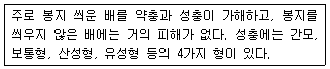
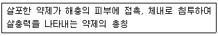

종자기사 (2013-03-10 기출문제)
1과목: 종자생산학
1. 순도분석에서 이물(inert matter)에 속하는 것은?
- 미숙립
- 병해립(맥각병해립, 균핵병해립, 깜부기병해립 및 선충에 의한 충영립은 제외)
- 종피가 완전히 벗겨진 콩과
- 원래 크기의 1/2 이상인 종자 쇄립
(정답률: 68%)

2. 다음 중 뇌수분을 이용하여 채종하는 작물은?
- 완두
- 배추
- 당근
- 아스파라거스
(정답률: 84%)
3. 수박 한통에는 많은 개수의 종자가 있다. 많은 종자가 생기는 것과 관련이 없는 것은?
- 배낭이 많다.
- 씨방이 많다.
- 배주가 많다.
- 난세포(난핵)가 많다.
(정답률: 60%)
4. 배추과(십자화과) 채소의 채종과 관련된 특성으로 옳지 않은 것은?
- 자가불화합성이 있다.
- 저온 감응성 식물이 많다.
- 대부분이 영양번식이 잘 된다.
- 뇌수분을 이용한다.
(정답률: 78%)
5. 메밀의 10a당 파종적량은?
- 3kg
- 5kg
- 7kg
- 15kg
(정답률: 62%)
6. 다음 작물 중 단일처리에 의하여 성발현이 영향을 받는 것은?
- 배추
- 목화
- 아마
- 오이
(정답률: 63%)
7. 종자의 발아검사 방법으로 옳지 않은 것은?
- 반복은 종자의 크기에 따라 50입씩 반복을 두어 검사할 수 있다.
- 정립종자 중 무작위로 100입씩 400입을 추출한다.
- 검사시료 당 400입을 2~3반복으로 나누어 검사할 수 있다.
- 복수발아종자는 분리하지 않으며 단일종자로 취급한다.
(정답률: 58%)
8. 배 휴면을 하는 종자의 휴면타파에 가장 효과적인 방법은?
- 습윤 고온 처리
- 습윤 저온 처리
- 건조 고온 처리
- 건조 저온 처리
(정답률: 68%)
9. 다음 중 종자소독 방법에 속하지 않는 것은?
- 약제소독
- 열소독
- 발효법
- KNO3 처리법
(정답률: 51%)
10. 종자 프라이밍(seed priming) 처리의 주된 목적은?
- 병해충 방제
- 발아 균일성
- 저장력 향상
- 기계화 파종
(정답률: 71%)
11. 식물이 생성하는 화아유도에 관련된 물질로서 광파장에 따라 그 성질이 변하는 것은?
- Chromosome
- Gibberellic acid
- Phytochrome
- Polypeptide
(정답률: 78%)
12. 화훼류 중에서 구근류, 숙근류 및 화목류는 종자번식보다는 영양번식을 주로 하는데 그 이유는?
- 대량번식이 가능하기 때문에
- 신품종을 얻을 수 있기 때문에
- 생산비가 저렴하기 때문에
- 잡종성이 강하기 때문에
(정답률: 51%)
13. 4단계의 종자생산에서 원원종에 대한 설명으로 옳은 것은?
- 육종가가 품종의 고유특성을 유지해야 하는 단계
- 기본식물에서 유래한 종자생산 단계
- 독농가에게 보급될 종자를 생산하는 단계
- 순도검사는 완화할 수 있는 단계
(정답률: 77%)
14. 상추의 채종지로서 갖추지 않아도 되는 조건은?
- 비가 적을 것
- 일조량이 많을 것
- 기온이 온화할 것
- 저온 요구도를 충족시킬 수 있을 것
(정답률: 56%)
15. 채종포에서 가장 중요한 관리 사항은?
- 잡초방제
- 병충해 방제
- 자연교잡 및 이품종의 혼입 방지
- 도복 방지
(정답률: 87%)
16. F1 종자의 채종체계에서 웅성불임계통의 이용 용도는?
- 종자친
- 유지친
- 화분친
- F1 교잡종자
(정답률: 52%)
17. 일반적인 종자의 저장 조건으로 가장 적절한 것은?
- 고온 다습
- 고온 건조
- 저온 다습
- 저온 건조
(정답률: 80%)
18. 국제종자검사협회(ISTA)의 국제종자표지 규정 중에서 시료채취와 검사가 다른 공인검정기관 사이에 이루어지는 경우에 발행하는 증명서는?
- 녹색증명서
- 청색증명서
- 등황색증명서
- 적색증명서
(정답률: 60%)
19. 종자의 휴면이 타파될 때 일어나는 종자내의 생화학적 현상으로 옳지 않은 것은?
- Abscissic acid(ABA) 함량 증가
- 당 함량 증가
- 아미노산 함량 증가
- 지질 함량 감소
(정답률: 72%)
20. 경실종자의 발아촉진법으로 가장 거리가 먼 것은?
- 침지(담금)
- 기계적인 상처내기
- 산으로 상처내기
- 지베렐린 처리
(정답률: 64%)
2과목: 식물육종학
21. 생리생육성(生理生育性) 형질에 속하는 것은?
- 발아 및 휴면성
- 종피색
- 식미
- 함유성분
(정답률: 70%)
22. 아포믹시스(apomixis)에 해당하는 것만으로 묶여있는 것은?
- 중복수정, 위잡종, 이배성 반수체
- 복이배체, 무포자생식, 웅성단위생식
- 위잡종, 웅성단위생식, 무포자생식
- 이배성 반수체, 중복수정, 복이배체
(정답률: 66%)
23. 유전자 작용 중 상위성 효과에 대한 설명으로 맞는 것은?
- 비대립 유전자 간 상호작용으로 나타나는 효과
- 이형접합상태에 있는 대립유전자 간 상호작용으로 나타나는 효과
- 동형접합상태에 있는 대립유전자 간 상호작용으로 나타나는 효과
- 개체가 가지고 있는 유전자들의 평균 효과의 합계
(정답률: 54%)
24. 자식성 작물에서 돌연변이유발원을 처리한 후 표현형 조사에 의해 열성 돌연변이를 선발할 수 있는 최초 세대는?(단, M1은 돌연변이유발원을 처리한 당대이다.)
- M1
- M2
- M3
- M4
(정답률: 68%)
25. 자식성식물의 이형접합체(Aa)를 자식하여 얻은 다음 세대 집단에서 동형접합체 비율은?
- 25%
- 50%
- 75%
- 80%
(정답률: 67%)
26. 불량토양환경에 대한 농작물의 저항성으로만 나열된 것은?
- 내서성, 내산성
- 내염성, 내냉성
- 내산성, 내염성
- 내서성, 내냉성
(정답률: 80%)
27. 유전자의 상가적 효과(相加的 效果)를 옳게 설명한 것은?
- 이형접합상태에 있는 대립유전자간 상호작용에 의해서 초우성의 형태로 나타난다.
- 세대가 진전되면서 그 값이 바뀌는 성질이 있다.
- 비대립유전자 간 상호작용에 의해서 동일한 유전자의 작용이 바뀐다.
- 형질 발현에 관여하는 유전자 각각의 고유효과로 세대가 바뀌어도 변하지 않는다.
(정답률: 37%)
28. 다음 중 순계설을 주장한 사람은?
- De Vries
- Johannsen
- Mendel
- Lamark
(정답률: 70%)
29. 일대잡종 품종의 종자생산에 효과적으로 사용하고 있는 것은?
- 아트라진 저항성
- 기본영양 생장성
- 웅성불임성
- 삼염색체성
(정답률: 79%)
30. F1 (Aa)을 자식(F2)하였을 경우와 여교배(BC1F1)하였을 경우의 차이는?
- 유전자형은 자식에서 2개이고, 여교배에서 3개이다.
- 유전자형은 자식에서 3개이고, 여교배에서 2개이다.
- 동형접합체 비율은 자식에서 75%이고, 여교배에서 50%이다.
- 동형접합체 비율은 자식에서 50%이고, 여교배에서 75%이다.
(정답률: 50%)
31. 2개의 형질을 동시에 육종목표로 할 경우 선발이 쉬운 조건은?
- 경로계수의 값이 낮다.
- 선발 총점이 높다.
- 두 형질간 상관계수의 값이 높다.
- 타식률이 높다.
(정답률: 64%)
32. 방사선 돌연변이 육종에 있어서 방사선의 적정 강도를 결정하는데 치사율을 고려한다. 가장 적정한 치사율?
- 0%
- 25%
- 50%
- 75%
(정답률: 53%)
33. 잡종집단에서 선발효율을 높이고자 할 때 이용할 수 있는 분자표지는?
- 캘루스 형성 여부
- 히스톤 단백질 함량
- RFLP 표지
- 폴리펩티드 신장
(정답률: 79%)
34. 변이 창출의 방법이 아닌 것은?
- 서로 다른 품종간 교배
- 종간 교배
- 형질전환
- 영양번식
(정답률: 83%)
35. 자식성식물의 자식성 기작의 한 종류로 들 수 있는 것은?
- 불완전 화서이다.
- 꽃이 피기 전에 화분이 터진다.
- 자가불화합성이 있다.
- 암술과 수술의 성숙시기가 다르다.
(정답률: 62%)
36. 차대에 유전자형이 (S)msms인 웅성불임 개체만 나올 수 있는 교배조합은?(단, 괄호안은 세포질형으로서 S는 불임세포질이고, N은 정상세포질이다. 그리고 ms는 웅성불임유전자이다.)
- (S)msms × (N)msms
- (S)msms × (N)Msms
- (S)msms × (S)Msms
- (S)msms × (S)MsMs
(정답률: 53%)
37. 다음 중 잡종강세 기구와 관계가 없는 것은?
- 유전자 중심설
- 우성 유전자 연쇄설
- 초우성설
- 복대립 유전자설
(정답률: 54%)
38. 다음 중 유전자 조작에 사용되는 효소로만 나열된 것은?
- 역전사효소, DNA 중합효소, 리파아제
- DNA 중합효소, 펙티나아제, 제한효소
- 리가아제, 펙티나아제, 역전사효소
- 제한효소, DNA 중합효소, 리가아제
(정답률: 58%)
39. 타가수정 작물에서 품종퇴화가 일어나는 가장 큰 원인은?
- 미동 유전자의 분리
- 자연교잡
- 기계적 혼입
- 병리적 퇴화
(정답률: 76%)
40. 아조변이에 관한 설명으로 옳은 것은?
- 과수에서만 국한되어 나타나는 특성이다.
- 대체로 가지 전체의 세포에 돌연변이가 급격히 전염된 현상이다.
- 접목을 하여도 변이의 실용상 주요형질은 크게 변화하지 않는다.
- 잎의 형태나 꽃의 색깔 등에 영향을 미치고 과실에는 영향이 없는 것이 특징이다.
(정답률: 46%)
3과목: 재배원론
41. 작물의 일생을 마치는데 소요되는 총온량은 적산온도로 표시하는데 벼의 적산온도는?
- 500~1500℃
- 1500~2500℃
- 2500~3500℃
- 3500~4500℃
(정답률: 59%)
42. 일반적인 작물의 분류방법으로 용도에 따라 벼를 분류한다면 옳은 것은?
- 서류
- 화곡류
- 두류
- 견과류
(정답률: 72%)
43. 우리나라 작물 재배의 특징이 아닌 것은?
- 논의 이용도가 매우 높고 윤작체계가 발달하였다.
- 경영규모가 작아서 농업 수익이 낮다.
- 기상재해가 큰 편이다.
- 농산품의 국제경쟁력이 낮다.
(정답률: 60%)
44. 내습성이 강한 작물의 특징으로 맞지 않는 것은?
- 황화수소 등 환원성 유해물질에 대한 저항성이 큰 것이 내습성이 강하다.
- 근계가 얕게 발달하거나 부정근의 발생력이 큰 것이 내습성을 강하게 한다.
- 채소류에서는 양상추, 양배추, 토마토, 가지, 오이 등이 내습성이 강하다.
- 복숭아, 무화과, 밤 등이 올리브, 포도 등에 비해 내습성이 강하다.
(정답률: 46%)
45. 추파맥류의 춘화처리에 가장 적당한 온도와 기간은?
- 0~3℃, 45일
- 4~6℃, 60일
- 0~3℃, 25일
- 4~6℃, 25일
(정답률: 43%)
46. 기공개폐나 효소활성 등의 생리적 역할에 크게 관여하는 원소는?
- P
- K
- Mg
- S
(정답률: 60%)
47. 곡물의 저장에 영향을 주는 요인을 옳게 설명한 것은?
- 대부분 미생물의 왕성한 번식온도는 30~45℃이다.
- CA 저장기술은 아직 실용화되고 있지 못하다.
- 쌀의 저장성은 백미가 현미보다 높다.
- 곡물을 가해하는 미생물은 대체로 곡물 수분함량 11% 이하에서 사멸한다.
(정답률: 52%)
48. 토양수분이 적을 때 위조저항성을 증대시키는 식물호르몬은?
- Auxin
- Gibberellin
- Cytokinin
- Abscissic acid
(정답률: 58%)
49. 작물의 영양번식에 대한 설명으로 옳은 것은?
- 종자 채종을 하여 번식시킨다.
- 우량한 유전질을 영속적으로 유지할 수 있다.
- 잡종 1세대 이후 분리집단이 형성된다.
- 1대 잡종벼는 영양번식으로 채종한다.
(정답률: 69%)
50. 냉해에 대한 설명으로 옳지 않은 것은?
- 벼는 규산의 흡수가 적어지고, 조직의 규질화가 충분하지 못하여 도열병균 침입이 용이하다.
- 벼에서 유수형성기 때 냉온을 만나면 출수가 지연된다.
- 저온으로 호흡은 감퇴하나 모든 대사기능은 정상적으로 이루어진다.
- 질소동화가 저해되어 체내에 암모니아축적이 많아진다.
(정답률: 69%)
51. 다음 중 산성토양에서 적응성이 가장 약한 작물은?
- 자운영
- 귀리
- 감자
- 수박
(정답률: 48%)
52. 작물의 풍해가 발생하는 풍속은?
- 1~2 km/h
- 4~6 km/h
- 9~10 km/h
- 15 km/h 이상
(정답률: 53%)
53. 재배조건에 따른 T/R율을 올바르게 설명한 것은?
- 질소비료를 많이 주면 T/R율이 감소한다.
- 토양수분이 감소하면 T/R율은 증대한다.
- 일사량이 부족하면 T/R율이 증대된다.
- 토양 통기가 불량하면 T/R율은 감소한다.
(정답률: 44%)
54. 탄화수소, 오존, 이산화질소가 화합해서 생성되는 대기오염 물질은?
- PAN
- 연무
- 광화학스모그
- 불화수소
(정답률: 53%)
55. 천적을 이용한 병해충 방제의 가장 큰 장점은?
- 병해충 방제효율이 높아 수확량을 늘릴 수 있다.
- 병해충 방제에 드는 경비와 노동력을 줄일 수 있다.
- 환경친화적인 방제로 농산물의 안전성을 향상시킬 수 있다.
- 토양을 보호하고 농산물의 맛과 품질을 크게 개선시킬 수 있다.
(정답률: 71%)
56. 채소류 육묘시 우량묘의 조건에 해당하지 않는 것은?
- 키가 너무 크지 않고, 마디 사이 간격, 잎의 크기 등이 적당하며, 병해충의 피해를 받지 않은 것은 물론 뿌리군이 잘 발달해야 함
- 잎은 가능하면 두텁고 동화능력이 큰 것이 좋으며, 지상부와 뿌리의 비율(T/R율)이 균형을 이루어야 함
- 품종 고유의 특성을 갖추고, 균일도가 높아야 함
- 고온이나 저온, 수분 스트레스 등을 일정 기간 이상 받아 이식에 대한 저항성이 높아야 함
(정답률: 60%)
57. 식물 호르몬의 일반적인 특징이 아닌 것은?
- 식물의 체내에서 생성된다.
- 생성부위와 작용부위가 같다.
- 극미량으로도 결정적인 작용을 한다.
- 형태적, 생리적인 특수한 변화를 일으키는 화학물질이다.
(정답률: 66%)
58. 내건성이 강한 작물의 특성 설명으로 옳은 것은?
- 세포의 수분보류력이 적다.
- 세포액의 삼투포텐셜이 높다.
- 원형질막의 수분 및 요소에 대한 투과성이 크다.
- 세포의 원형질 함량이 적다.
(정답률: 47%)
59. 연작에 의한 해가 적은 작물로 짝지어진 것은?
- 가지, 고추, 수박
- 무, 당근, 양파
- 파, 쪽파, 시금치
- 토란, 쑥갓, 참외
(정답률: 49%)
60. 채소류 작물의 접목육묘시 접목 후 환경관리방법으로 부적합한 것은?
- 접목 후 3일 정도는 최고온도는 30℃ 이하, 최저온도는 25℃ 이상으로 관리한다. 이 기간 동안 온도가 너무 낮으면 세포분열이 억제되어 대목과 접수부위의 연결이 늦어지고, 활착률도 떨어진다.
- 꽂이접의 경우 접목 후 2~3일은 접목상 안이 거의 포화 상태가 되어야 하고, 맞접은 상대습도를 80~90% 정도는 유지해야 한다.
- 접목 후 3~5일부터는 습도가 너무 높으면 과습으로 인하여 대목의 줄기가 짓물러 쓰러지거나 병이 발생되므로 터널의 피복재를 제거한다.
- 접목 후 1~2일까지는 강한 햇볕을 쬐면 잎의 증산량이 증가하여 시들게 되므로, 접목상의 비닐 터널 위는 차광망 등으로 덮어 직사광선을 받지 않도록 한다.
(정답률: 37%)
4과목: 식물보호학
61. 다음 설명하는 해충은?

- 배나무이
- 배나무방패벌레
- 콩가루벌레
- 배나무흰깍지벌레
(정답률: 54%)
62. 곤충의 피해에 대한 설명으로 옳은 것은?
- 흡즙 피해를 주는 것에는 나비류, 벌류가 있다.
- 저작 피해를 주는 것에는 풍뎅이, 진딧물, 매미충이 있다.
- 혹을 만들어 피해를 주는 해충으로는 벼줄기굴파리가 있다.
- 벼 오갈병은 번개매미충과 끝동매미충에 의하여 옮겨진다.
(정답률: 65%)
63. 일반적으로 매개충의 중요성이 가장 큰 것은?
- 선충
- 세균
- 곰팡이
- 파이토플라스마
(정답률: 60%)
64. 다음 중 1차 작용점이 분지되어 아미노산의 생합성을 저해하는 계열의 분열조직 저해 제초제는?
- Sulfonyl urea계 제초제
- Diphenyl ether계 제초제
- Carbamate계 제초제
- Bipyridylium계 제초제
(정답률: 59%)
65. 다음 중 완전변태류가 아닌 것은?
- 메뚜기목
- 벌목
- 딱정벌레목
- 나비목
(정답률: 64%)
66. 잡초의 유용성에 대한 설명 중 맞지 않는 것은?
- 토양침식의 방지
- 잡초의 자원화
- 토양물리환경의 개선
- 농작물의 품질 향상
(정답률: 73%)
67. 여름철 밭작물에 발생하는 1년생 화본과 잡초가 아닌 것은?
- 개기장
- 바랭이
- 강아지풀
- 파대가리
(정답률: 44%)
68. 고추, 담배, 땅콩 등의 작물을 재배할 때 많이 사용되는 방법으로서 잡초의 방제뿐만 아니라 수분을 유지시켜주는 장점을 지닌 방제법은?
- 추경
- 중경
- 담수
- 피복
(정답률: 61%)
69. 다음 중 표징이 아닌 것은?
- 균핵
- 자낭각
- 포자
- 탄저
(정답률: 47%)
70. 유충이 솔잎 기부에 충영을 형성하고 그 안에서 흡즙함으로서 피해를 입은 솔잎의 생장을 저해시키고, 피해가 수년간 계속되어 피해목을 고사시키는 해충은?
- 소나무재선충
- 솔잎혹파리
- 솔나방
- 솔껍질깍지벌레
(정답률: 59%)
71. 농약의 구비조건이 아닌 것은?
- 인축에 대한 독성이 낮을 것
- 병원균에 대한 독성이 낮을 것
- 잔류성이 적거나 없을 것
- 저항성 유발이 적거나 없을 것
(정답률: 72%)
72. 생육상 고온이 필요한 여름철에 여름작물이 저온을 만나서 받는 해는?
- 한해
- 동해
- 냉해
- 동상해
(정답률: 65%)
73. 다음 중 Fusarium oxyporum의 분화형과 기주식물이 잘못 연결된 것은?
- f. sp. niveum - 수박
- f. sp. lycopersici - 토마토
- f. sp. fragariae - 감자
- f. sp. dianthi - 카네이션
(정답률: 44%)
74. 작물의 피해 중 양적피해는?
- 수량 감소
- 수확한 생산물의 품질저하
- 상품가치 저하
- 병충해에 의한 품질저하
(정답률: 74%)
75. 식물병의 전염원의 소재가 될 수 없는 것은?
- 병든 식물의 잔재물
- 잡초
- 매개충
- 바람
(정답률: 52%)
76. 고형 시용제인 것은?
- 수용제
- 수화제
- 유제
- 입제
(정답률: 66%)
77. 다음 [보기]의 설명에 알맞은 용어는?

- 접촉독제
- 침투성살충제
- 소화중독제
- 점착제
(정답률: 48%)
78. 해충의 천적으로 이용되는 기생벌의 변태방법으로서 생활환에서 둘 또는 그 이상의 다른 유충형을 갖는 변태방법은?
- 점변태
- 과변태
- 무변태
- 완전변태
(정답률: 59%)
79. 페로몬을 이용한 해충 방제기술을 잘못 설명한 것은?
- 집합페로몬의 경우 집단 유살을 꾀할 수 있다.
- 교미교란을 통해 암컷 불임을 유발시킬 수 있다.
- 특정 해충의 발생을 모니터링해서 약제 방제 적기를 알 수 있다.
- 이종간의 교신물질로서 천적을 유인하여 해충방제효과를 높이게 된다.
(정답률: 54%)
80. 병과 표징이 맞게 연결된 것은?
- 감자 잎말림병 - 흰가루
- 사과나무 부란병 - 비린내
- 배추 무름병 - 균핵
- 배나무 붉은별무늬병 - 잎 뒷면에 돌기
(정답률: 41%)
5과목: 종자관련법규
81. 국가보증 또는 자체보증의 대상이 아닌 종자를 판매 또는 보급하고자 할 경우 종자의 포장에 꼭 기록하여야 할 내용이 아닌 것은?
- 종자의 생산연도
- 종자의 크기
- 종자의 무게 또는 입수
- 재배 시 특히 주의할 사항
(정답률: 52%)
82. 다음 중 국가품종목록의 등재대상 작물은?
- 무
- 보리
- 사과
- 사료용 옥수수
(정답률: 71%)
83. 다음 중 국가보증의 대상으로 맞지 않는 것은?
- 시ㆍ도지사가 생산한 콩 종자
- 농업단체가 수입한 사료용 옥수수 종자
- 농림수산식품부장관을 대행하여 농민이 생산한 벼 종자
- 농림수산식품부장관이 생산한 벼 종자
(정답률: 66%)
84. 종자업을 영위하고자 하는 자는 종자관리사 1인 이상 및 종자생산에 필요한 최소한의 시설을 갖추도록 정하고 있으나, 예외 규정으로 종자관리사를 두지 않아도 종자업 등록을 할 수 있는 작물이 있다. 이에 해당되는 작물로 맞는 것은?
- 벼
- 감자
- 콩
- 뽕
(정답률: 63%)
85. 종자산업법상 품종명칭 등록요건에 대한 설명으로 틀린 것은?
- 숫자 또는 기호로만 표시한 품종명칭은 등록을 받을 수 없다.
- 당해 품종 또는 당해 품종의 수확물의 생산시기로만 표시한 품종명칭은 등록을 받을 수 없다.
- 작물의 명칭, 속 또는 종의 명칭을 사용한 품종명칭은 등록을 받을 수 없다.
- 저명한 타인의 승낙을 얻은 경우라도 그 타인의 성명을 포함하는 품종명칭은 등록받을 수 없다.
(정답률: 70%)
86. 보증종자의 보증표시 방법으로 맞지 않는 것은?
- 원원종의 보증표시는 바탕색은 흰색으로, 대각선은 보라색으로, 글씨는 검정색으로 표시한다.
- 원종의 보증표시는 바탕색은 청색으로, 글씨는 검정색으로 표시한다.
- 보급종(Ⅰ)의 보증표시는 바탕색은 흰색으로, 글씨는 검정색으로 표시한다.
- 채종단계별 구분을 요하지 아니하는 보증종자의 보증표시는 바탕색은 청색으로, 글씨는 검정색으로 표시한다.
(정답률: 45%)
87. 수입 적응성 시험을 받아야 하는 대상으로 맞는 것은?
- 대량으로 수입되는 작물 종자
- 처음으로 수입되는 모든 작물 종자
- 농림수산식품부장관이 정하는 작물의 종자로서 국내에 처음으로 수입되는 품종의 종자로서 판매를 목적으로 하는 경우
- 농림수산식품부장관이 정하는 모든 작물 종자
(정답률: 53%)
88. 다음 품종 중 구별성이 있다고 볼 수 있는 것은?
- 품종보호 출원일 이전까지 일반인에게 알려져 있는 품종과 명확하게 구별되는 품종
- 기존에 유통되고 있는 품종과 유사한 품종
- 국가품종목록에 등재된 품종과 유사한 품종
- 보호품종과 유사한 품종
(정답률: 73%)
89. 국가 품종목록 등재신청에서 등재되는 절차에 대한 설명 중 맞는 것은?
- 신청→공고→심사→등재
- 신청→심사→등재→공고
- 신청→심사→공고→등재
- 신청→공고→심사→등재
(정답률: 52%)
90. 품종목록에 등재된 품종의 종자를 생산하고자 할 때 생산을 대행할 수 없는 자는?
- 농촌진흥청장
- 특별시장ㆍ광역시장 또는 도지사
- 국립종자원장이 정하는 개인육종가
- 농림수산식품부령으로 정하는 종자업자
(정답률: 53%)
91. 다음 중 품종보호 원부에 이를 등록하여야만 그 효력이 발생하는 행위에 해당하지 않는 것은?
- 통상실시권의 설정
- 품종보호권의 이전(상속과 그 밖의 일반승계에 의한 경우는 제외한다.)
- 전용실시권의 이전(상속 기타 일반승계에 의한 경우를 제외한다.)
- 품종보호권을 목적으로 하는 질권의 설정(상속과 그 밖의 일반승계에 의한 경우는 제외한다.)
(정답률: 37%)
92. 다음 중 원품종의 품종보호권의 효력이 미치지 아니하는 경우는?
- 보호품종(기본적으로 다른 품종에서 유래된 품종이 아닌 보호품종만 해당한다.)으로부터 기본적으로 유래된 품종
- 타인의 보호품종과 2개의 특성에서 구별되는 품종
- 보호품종을 반복하여 사용하여야 종자생산이 가능한 품종
- 타인의 보호품종과 명확히 구별되지 아니하는 품종
(정답률: 32%)
93. 품종보호의 심판에 관련된 내용 중 틀린 것은?
- 심판위원회에 품종보호심판위원회 위원장과 품종보호심판위원을 두되, 심판위원 중 1명은 상임으로 한다.
- 심판위원의 자격은 대통령령으로 정한다.
- 심판은 4명의 심판위원으로 구성되는 합의체에서 한다.
- 심사관은 무권리자에 대하여 품종보호가 된 경우 무효 심판을 청구할 수 있다.
(정답률: 67%)
94. 품종목록 등재대상작물을 생산 또는 보급하고자 할 때, 종자보증을 받지 않아도 되는 경우에 해당되지 않는 것은?
- 1대 잡종의 친 또는 합성품종의 친으로만 쓰이는 경우
- 시험 또는 판매의 목적으로 쓰이는 경우
- 증식 목적으로 판매한 후 생산된 종자를 판매자가 다시 전량 매입하는 경우
- 생산된 종자를 전량 수출하는 경우
(정답률: 39%)
95. 보증종자에 대한 종자보증의 효력이 있는 것은?
- 보증표시를 하지 아니하거나 보증표시를 위조하거나 변조하였을 경우
- 종자를 보증한 종자관리사가 종자관리사 자격을 상실한 경우
- 보증한 종자의 포장을 뜯거나 열었을 경우
- 보증의 유효기간이 지났을 경우
(정답률: 51%)
96. 품종보호를 받을 수 있는 권리자에 관한 설명으로 틀린 것은?
- 신품종을 육성한 자는 품종보호를 받을 수 있는 권리를 가진다.
- 품종보호를 받을 수 있는 권리를 승계한 자는 품종보호를 바을 수 있는 권리를 가진다.
- 2인 이상 신품종을 공동으로 육성한 자는 권리를 공유한다.
- 대리인은 품종보호를 받을 수 있는 권리를 가진다.
(정답률: 59%)
97. 종자산업법상의 벌칙규정 중 1년 이하 징역 또는 1천만원 이하의 벌금에 해당하지 않는 것은?
- 보호품종 외의 타인의 품종명칭을 도용하여 종자를 판매한 자
- 품종보호를 받지 않은 종자를 품종보호를 받았다고 허위표시를 한 자
- 보증서를 거짓으로 발급한 종자관리사
- 등록하지 아니하고 종자업을 영위한 자
(정답률: 30%)
98. 품종보호를 받을 수 있는 요건으로만 바르게 짝지어진 것은?
- 구별성, 균일성, 연속성, 안전성, 우수성
- 구별성, 균일성, 안정성, 신규성, 관련 규정에 의한 품종명칭
- 구별성, 균일성, 안정성, 신규성, 영속성
- 구별성, 균일성, 안전성, 광지역성, 관련 규정에 의한 품종명칭
(정답률: 60%)
99. 품종보호결정에 관환 설명으로 맞는 것은?
- 품종보호결정은 서면으로 하여야 한다.
- 품종보호결정은 이유를 첨부할 필요는 없다.
- 품종보호결정은 공보에 게재할 필요가 없다.
- 품종보호결정에 관한 공보게재 사항은 대통령령으로 정한다.
(정답률: 50%)
100. 종자산업법에서 정의하고 있는 종자산업의 범위에 해당되지 않는 것은?
- 종자의 증식
- 종자의 대여
- 품종의 보호
- 종자의 수입
(정답률: 33%)